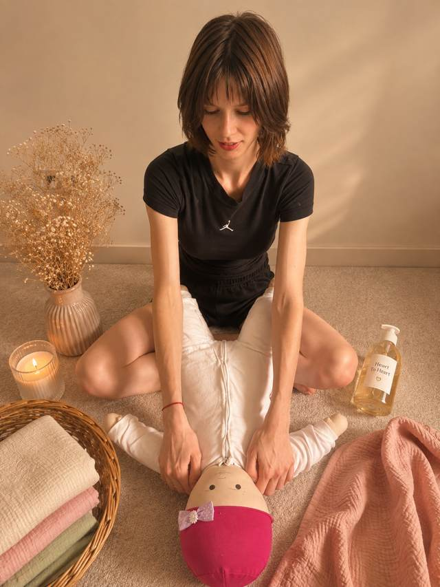
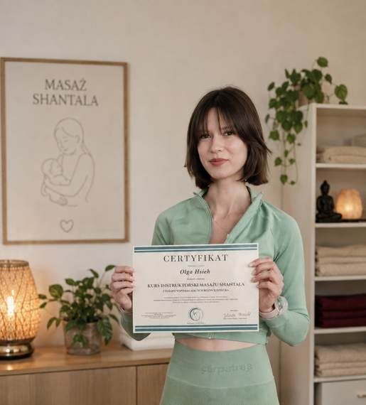

Pokażę Ci krok po kroku, jak masować swoje dziecko metodą Shantala. U Ciebie w domu w Warszawie, w małej grupie albo online, w tempie Twojego maluszka.

To tradycyjny indyjski masaż niemowląt, który w Europie spopularyzował francuski lekarz Frédérick Leboyer w latach 70. Składa się z prostej sekwencji spokojnych, rytmicznych ruchów: od klatki piersiowej, przez rączki i brzuszek, po nóżki, plecy i buzię.
Nie trzeba mieć wprawy ani specjalnego sprzętu. Wystarczy ciepły pokój, olej i kilkanaście minut uwagi. Dla wielu rodziców to stały, spokojny rytuał dnia.
„Gorąco polecam! Pozytywna atmosfera, zajęcia prowadzone bez pośpiechu i możliwość przetestowania technik w praktyce sprawiają, że zdobyta wiedza zostaje w głowie. (…) Podsumowując: super zajęcia z super instruktorem!”
„Olga jest bardzo cierpliwa, ma ogromną wiedzę i jest przemiłą osobą. Jest delikatna i troskliwa, i wie, o czym mówi.”
„Cały warsztat bardzo mi się podobał, ciężko wybrać jeden segment. Czekam jedynie na kolejne części warsztatów, bo było super!”

Jestem certyfikowaną instruktorką masażu Shantala. Ukończyłam kurs instruktorski masażu Shantala i terapii wspomagających rozwój dziecka.
Z wykształcenia jestem fizyczką, dlatego o masażu mówię prosto i uczciwie: opowiadam, co pokazują badania, i nie obiecuję cudów.
Do Shantali trafiłam jako mama, szukając wsparcia dla rozwoju mojego synka. Zostałam, bo zobaczyłam, ile ten codzienny, spokojny dotyk daje i dziecku, i rodzicowi. Dziś to moja pasja i chcę się nią dzielić z innymi rodzicami.
Napisz do mnie na Instagramie albo mailem. Odpowiadam zwykle tego samego dnia.